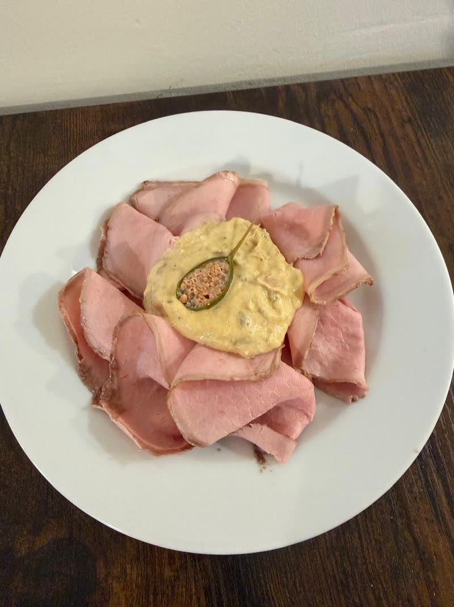
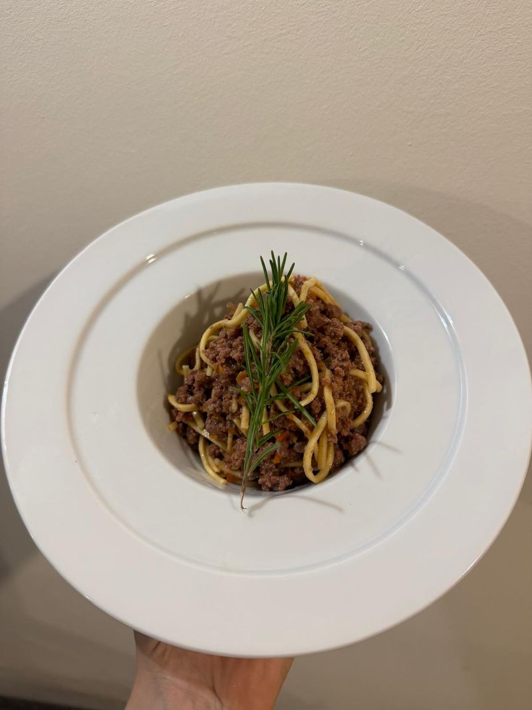
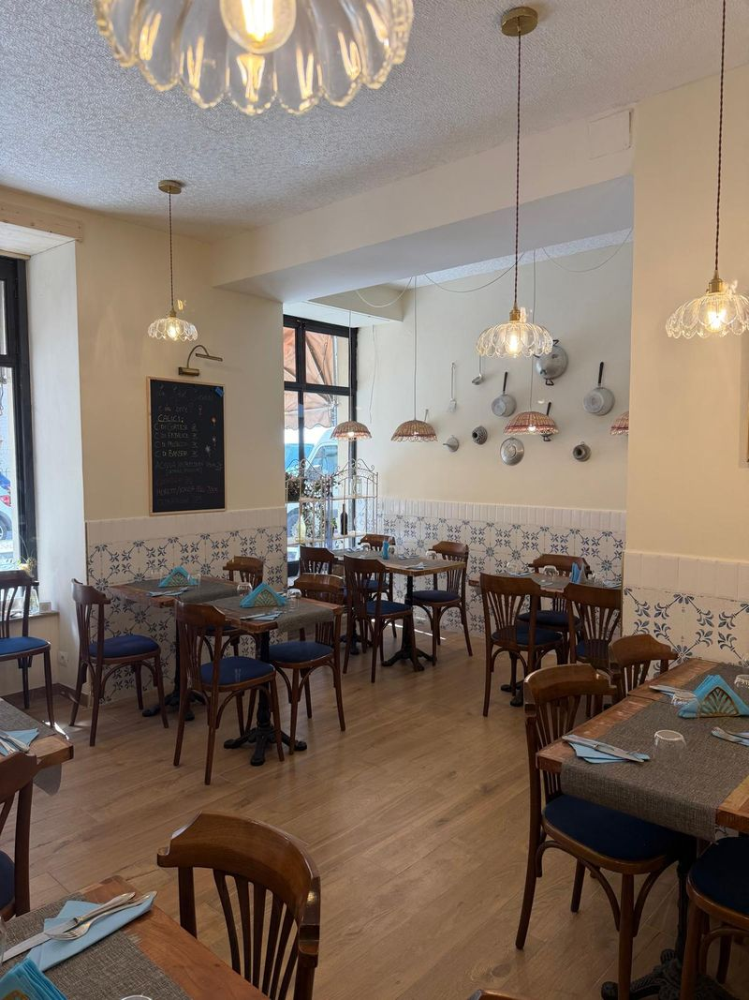
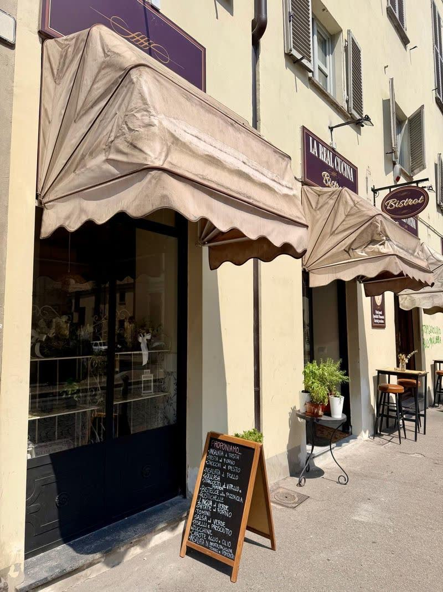

Gastronomia e bistrotQuadrilatero Romano, Torino
Tradizione piemontese, fatta in casa.
Pasta fresca, agnolotti e piatti della tradizione preparati nella nostra gastronomia, e serviti al tavolo nel bistrot di Via della Consolata, nel Quadrilatero Romano.
Pranzo e cena · Pranzo lun–ven 11:00–15:00 · Cena mer–sab 19:15–22:00

La stessa ospitalità di casa, portata in tavola.

Ricette della tradizione piemontese e grandi classici italiani, con prodotti freschi, selezionati e di stagione.
In gastronomia prepariamo pasta fresca, agnolotti, sughi e dolci con prodotti freschi e di stagione. Nel bistrot li serviamo a pranzo e a cena, oppure li incartiamo da portare via.
I piatti del giorno sono scritti sulla lavagna all’ingresso. Per tavolate e occasioni particolari chiamateci in anticipo: organizziamo insieme la sala.
- Pasta fresca
- Agnolotti
- Sughi
- Dolci
- Asporto
Cambia con le stagioni. I piatti della gastronomia si possono anche portare a casa.
La Real Cucina
La carta
I piatti del giorno sono scritti sulla lavagna all’ingresso.
I piatti segnati si possono vedere in foto
Antipasti della tradizione
Vitello tonnato con cappero
Fettine di vitello rosa e salsa tonnata: l’antipasto piemontese per eccellenza.
Pasta fresca e primi
Tagliatelle al ragù bianco
Il ragù senza pomodoro, dove il sapore della carne resta in primo piano.
Gnocchi con gamberi e zucchine
Un primo di mare, con le zucchine a dare dolcezza ai gamberi.
Agnolotti e specialità piemontesi
Ravioli con salsa
Pasta ripiena servita con la sua salsa: il primo più classico della casa.
Secondi di carne e di pesce
Arrosto con patate al forno
Carne arrosto affettata, con il suo fondo e le patate dorate al forno.
Baccalà con crema di zucchine
Il baccalà accompagnato da una crema vellutata di zucchine.
Contorni di stagione
Verdure del periodo
Preparate in modo semplice, per accompagnare i secondi.
Dolci artigianali
Classico tiramisù
Mascarpone, caffè e savoiardi, nella versione di sempre.
Piatti da asporto
La gastronomia, da portare via
I piatti della cucina, pronti da portare a casa. Chiamateci per sapere cosa c’è oggi.
Allergeni: chiedete in sala.
Prenota un tavolo.
Prenotazione online in arrivo. Per ora la richiesta arriva a noi su WhatsApp e vi rispondiamo per confermare.
- Orari
- Pranzo lun–ven 11:00–15:00. Cena mer–sab 19:15–22:00. Domenica chiuso.
- Gruppi
- Per tavolate e occasioni particolari chiamateci in anticipo: organizziamo insieme la sala.
- Allergie
- Segnalateci allergie o intolleranze al momento della prenotazione.
- Asporto
- I piatti della gastronomia si possono portare a casa: chiamateci per sapere cosa c’è oggi.
A due passi dall’obelisco di Piazza Savoia.

Nella sala del bistrot ci sono tavoli in legno, piastrelle decorate alle pareti e lampadari in vetro; sulla lavagna, i piatti del giorno. Si pranza e si cena in Via della Consolata, nel cuore del Quadrilatero Romano.
Poco lontano, l’obelisco di Piazza Savoia ricorda le leggi Siccardi del 1850: sotto la prima pietra furono murati anche grissini, semi di riso e una bottiglia di Barbera.
La Real Cucina è il quinto capitolo della famiglia Ai Savoia, che dal 2006 accoglie ospiti nel complesso di Palazzo Saluzzo Paesana, costruito nel 1715, e oggi porta avanti cinque case.
Orari e dove.
Via della Consolata 7D
10122 Torino
Quadrilatero Romano
- Pranzo
- lun–ven, 11:00–15:00
- Cena
- mer–sab, 19:15–22:00
- Domenica
- chiuso
- Oggi
